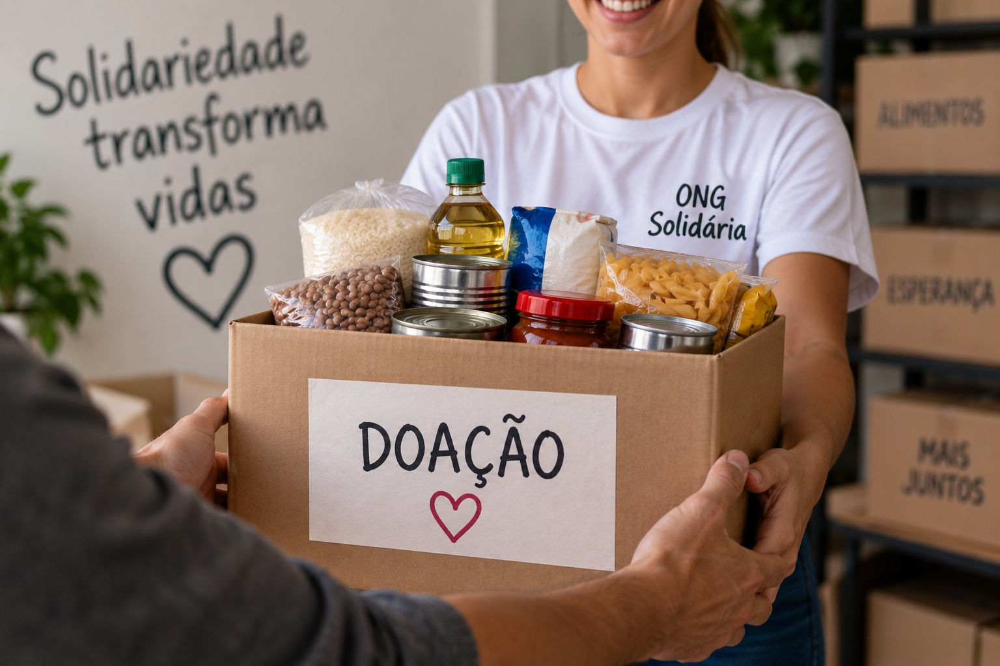
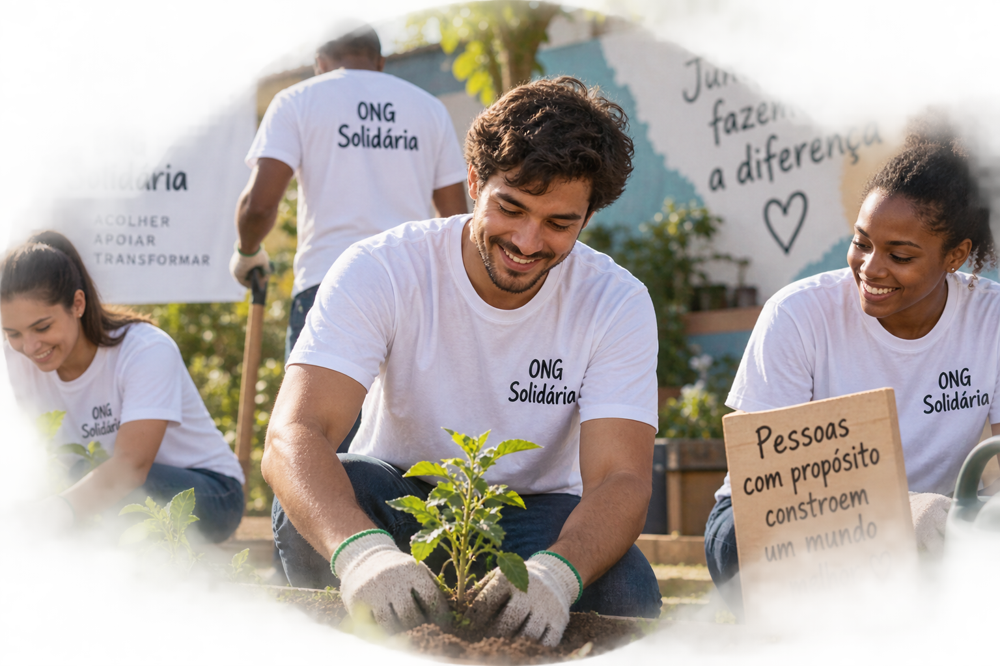

Campanha de arrecadação de alimentos
Arrecadamos alimentos não perecíveis para apoiar famílias em situação de vulnerabilidade social.
O que você pode doar?
- Arroz e feijão
- Macarrão
- Leite em pó
- Óleo de cozinha
- Alimentos enlatados

Conheça nossas iniciativas e descubra como você pode contribuir para transformar vidas em nossa comunidade.
Arrecadamos alimentos não perecíveis para apoiar famílias em situação de vulnerabilidade social.

Nossos voluntários participam de ações sociais, atividades educativas e iniciativas de apoio às famílias, contribuindo para fortalecer os laços comunitários e promover a solidariedade.
